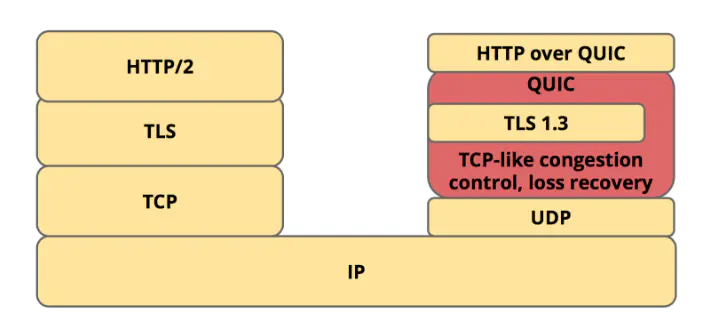
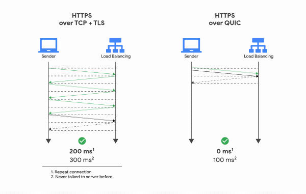
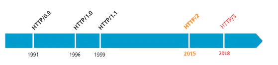
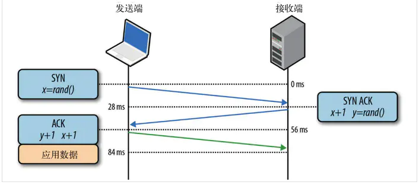
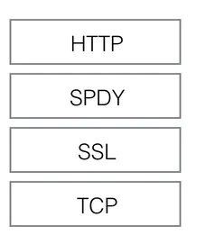
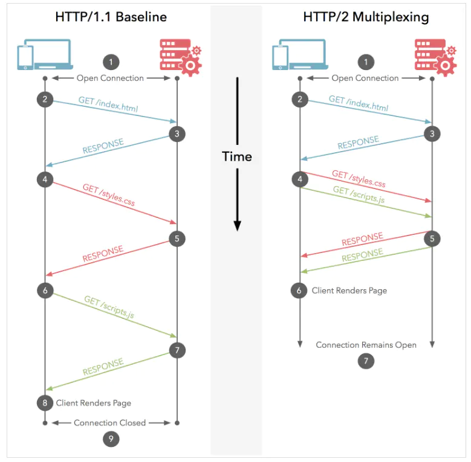
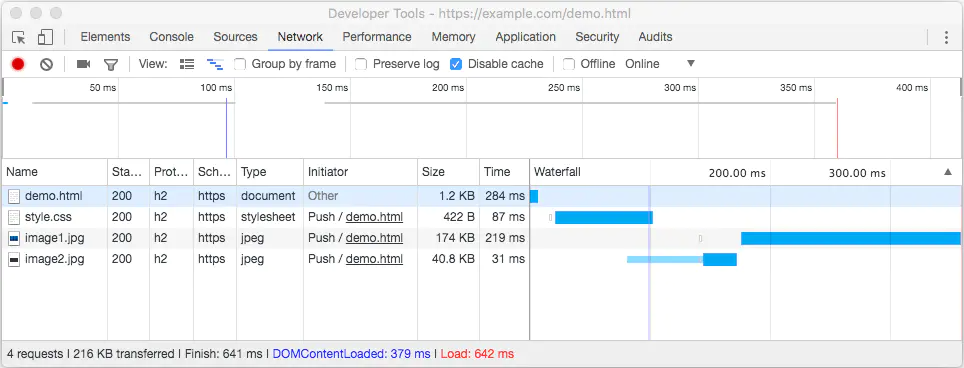

了解HTTP3.0吗？简要说一下HTTP的一个发展历程
一、HTTP3.0
HTTP3.0,也称作HTTP over QUIC。HTTP3.0的核心是QUIC（读音 quick）协议，由Google在2015年提出的SPDY v3演化而来的新协议，传动的HTTP协议
是基于传输层TCP的协议，而QUIC是基于传输层UDP上的协议，可以定义成：HTTP3.0 基于 UDP的安全可靠的HTTP2.0协议

QUIC协议针对基于TCP和TLS的HTTP2.0协议解决了下面问题
1.1减少了TCP三次握手及TLS握手时间
不管是HTTP1.0/1.1 还是HTTPS，HTTP2.0，都使用了TCP进行传输。HTTPS和HTTP2 还需要使用TLS协议来进行安全传输。这就出现了两个握手延迟，而基于
UDP协议的QUIC，因为UDP本身没有连接的概念，连接建立时只需要一次交互，半个握手的实际。区别如下图：

1.2 多路复用丢包时的线头阻塞问题
QUIC保留了HTTP2.0多路复用的特性，在之前的多路复用过程中，同一个TCP连接上有多个stream，假如其中一个stream丢包，在重传前后的stream都会受
影响，而QUIC中一个连接上的多个stream之间没有依赖。所以当发生丢包时，只会影响当前的stream，也就避免了线头阻塞问题。
1.3优化重传策略
以往的TCP丢包重传策略是：在发送端为每一个封包标记一个编号（sequence number），接收端在收到封包时，就会回传一个带有对应编号的ACK，就会认为
封包已经丢失，启动重新传送的机制，复用与原来相同的编号重新发送一次封包，确保在接收端这边没有任何封包漏接。这样的机制就会带来一些问题，假设发送端
总共对同一个封包发送了两次（初始+重传），使用的都是同一个sequence number：编号N。之后发送端在拿到编号N封包的回传ACK时。QUIC为了避免这个问题，
发送端在传送封包时，初始与重传的每一个封包都改用一个新的编号，unique packet number， 每一个编号都唯一而且严格递增，这样每次在收到ACK时，就可以
依据编号明确的判断这个ACK是来自初始封包或者是重传封包
1.4流量控制
通过流量控制可以限制客户端传输资料量的大小，有了流量控制后，接收端就可以只保留相对应大小的接收buffer，优化记忆体被占用的空间。但是如果存在
一个流量极慢的stream，光一个steam就可能占用掉接收端所有的资源。QUIC为了避免这个潜在的HOL Blocking，采用了连线层（connecting flow control）
和 stream层的（stream flow control）流量控制，限制单一 stream 可以占用的最大 buffer size
1.5连接迁移
TCP连接基于四元组（源IP、源端口、目的IP、目的端口），切换网络时至少会有一个因素发生变化，导致连接发生变化。当连接发生变化时，如果还使用原来的
TCP连接，则会导致连接失败，就得等原来的连接超时后重新建立连接，所以我们有时候发现切换到一个新网络时，即使新网络状况良好，但内容还是需要加载很久。
如果实现得好，当检测到网络变化时立刻建立新的TCP连接，即使这样，建立新的连接还是需要几百毫秒的实际。QUIC的连接不受四元组的影响，当这四个元素发生
变化时，原连接依然维持。QUIC连接不以四元组作为标识，而是使用一个64位的随机数，这个随机数被称为Connection ID 对应每个stream，即使IP或者端口
发生变化，只要connention ID没有变化，那么连接依然可以维持。
二、HTTP发展史
2.1 Web始祖HTTP
HTTP的全称是：超文本传输协议（HyperText Transfer Protocol）。
伴随着计算机网络和浏览器的诞生，HTTP1.0也随之而来，处于计算机网络和浏览器的诞生，HTTP是建立在TCP协议之上，所以HTTP协议的瓶颈及其优化技巧都
是基于TCP协议本身的特性，例如TCP建立连接的3次握手和断开连接的4次挥手以及每次建立连接带来的RTT延迟时间
2.2 HTTP与现代化浏览器
早在HTTP建立之初，主要就是为了将超文本标记语言（HTML）文档从WEB服务器传送到客户端的浏览器。也是说对于前端来说，我们所写的HTML页面将要放在
我们的WEB服务器上，用户通过浏览器访问URL地址来获取网页的显示内容，但是到了WEB2.0以来，我们的页面变得复杂，不仅仅单纯的是一些简单的文字和图片，
同时我们的HTML页面有了css，JavaScript，来丰富我们的页面展示，当ajax的出现，我们又多了一种向服务器端获取数据的方法，这些其实都是基于HTTP协议
的。同样到了移动互联网时代，我们页面可以跑在手机端浏览器里面，但是和PC相比，手机端的网络情况更加复杂，这使得我们开始了不得不对HTTP进行深入理解
并不断优化的过程

2.3 HTTP基本优化
带宽
如果说我们还停留在拨号上网的阶段，带宽可能会成为一个比较严重影响请求的问题，但是现在网络基础建设已经使得带宽得到极大的提升，我们不再会担心由带宽而
影响网速，那么就只剩下延迟了。
延迟
- 浏览器阻塞（HOL blocking）：浏览器会因为一些原因阻塞请求。浏览器对于同一个域名，同时只能有4个连接（这个根据浏览器内核不同可能会有所
差异），超过浏览器最大连接数限制，后续请求就会被阻塞。
- DNS查询（DNS Lookup）：浏览器需要知道目标服务器的IP才能建立连接。将域名解析为IP的这个系统就是DNS。这个通常可以利用DNS缓存结果来达到
减少这个时间的目的。
- 建立连接（initial connection）： HTTP是基于TCP协议的，浏览器最快也要在第三次握手时才能捎带HTTP请求报文，达到真正的建立连接，
但是这些连接无法复用会导致每次请求都经历三次握手和慢启动。三次握手在高延迟的场景下影响较明显，慢启动则对文件类大请求影响较大。下图为三次握手
流程图：

2.4 HTTP1.0和 HTTP1.1 的一些区别
HTTP1.0 最早在网页中使用是在1996年，那个时候只是使用一些较为简单的网页上和网络请求上，而HTTP1.1则在1999年才开始广泛应用与现在的各大浏览器
网络请求中，同时HTTP1.1也是当前使用最广泛的HTTP协议。
主要区别主要体现在：
- 缓存处理：在HTTP1.0中主要使用header里的if-Modified-since,expires来作为缓存判断的标准，HTTP1.1则引入了更多的缓存控制策略例如
Entity tag，if-Unmodified-since,if-match,if-none-match 等更多可供选择的缓存头来控制缓存策略。
- 带宽优化及网络连接的使用：HTTP1.0中，存在一些浪费带宽的现象，例如客户端只是需要每个对象的一部分，而服务器却将整个对象送过来了，并且不支持
断点续传功能，HTTP1.1则在请求头引入了range头域，它允许只请求资源的某个部分，即返回码是206（Partial Content），这样就方便了开发者
自由的选择以便于充分利用带宽和连接。
- 错误通知的管理：在HTTP1.1中新增了24个错误状态响应码，如409（Conflict）表示请求的资源与资源的当前状态发生冲突；410（Gone）表示服务器
上的某个资源被永久性的删除。
- Host头处理：在HTTP1.0中认为每台服务器都绑定一个唯一的IP地址，因此，请求消息中的URL并没有传递主机名（hostname）。但随着虚拟主机技术
的发展，在一台物理服务器上可以存在多个虚拟主机（Multi-homed Web Servers），并且他们共享一个IP地址。HTTP1.1的请求消息和响应消息都应支持
Host头域，且请求消息中如果没有Host头域会报告一个错误（400 Bad Request）。
- 长连接：HTTP 1.1支持长连接
（PersistentConnection）和请求的流水线（Pipelining）处理，在一个TCP连接上可以传送多个HTTP请求和响应，减少了建立和关闭连接的消耗和延迟
，其中长连接也就是对应在HTTP1.1中的Connection：keep-alive,一定程度上你不了HTTP1.0每次请求都要创建连接的缺点。
2.5 HTTP1.0和1.1现存的一些问题
- HTTP1.0和HTTP1.1可以称作HTTP1.x，正如上面提到过的，HTTP1.x在传输数据时，每次都需要重新建立连接，无疑增加了大量的延迟时间，特别是
在移动端更为突出。
- HTTP1.x在传输数据时，所有传输的内容都是明文，客户端和服务端都无法验证对方的身份，这在一定程度上无法保证数据的安全性。
- HTTP1.x在使用时，header里携带的内容过大，在一定程度上增加了传输的成本，病情每次请求header基本不怎么变化，尤其在移动端会增加用户流量。
- 虽然HTTP1.1支持了keep-alive,来弥补多次创建连接产生的延迟，但是keep-alive使用多了同样会给服务端带来了大量的性能压力，并且对于单个
文件被不断请求的服务（例如图片存放网站），keep-alive可能会极大的影响性能，因为它在文件被请求之后保持了不必要的连接很长时间。同样keep-alive
也无法解决线头阻塞（Head-of-line blocking，HOL）问题
2.6 HTTPS登场
为了解决上面的一些问题，网景在1994年创立了HTTPS，并应用在网景导航者浏览器中。最初，HTTPS是与SSL一起使用的，在SSL逐渐演变到TLS时（其实两个
是一个冻死，只是名字不同而已），最新的HTTPS也由在2000年五月公布的RFC2818正式确定下来。简单来说HTTPS就是安全版的HTTP，并且由于当今时代
对安全性要求更高，Chrome和Firefox都大力支持网站使用HTTPS，苹果也在ios10系统中强制APP使用HTTPS来传输数据，由此可见HTTPS势在必行。
2.7 HTTPS与HTTP的一些区别
- HTTPS协议需要到CA申请证书，一般免费证书很少，需要交费
- HTTP是超文本传输协议，信息是明文传输，HTTPS则是具有安全性的TLS加密传输协议
- HTTP和HTTPS使用的是完全不同的连接方式，用的默认端口也不一样，前者是80，后者是443。
- HTTPs的连接很简单，HTTPS协议是由TLS+HTTP协议构建的可以进行加密传输、身份认证的网络协议，比HTTP协议安全。
2.8 HTTPS 改造
如果一个网站要全站由HTTP替换成HTTPS，可能需要关注以下几点：
- 安装CA证书：一般的证书都是需要收费的，也有免费的：
1、Let's Encrypt： 免费，快捷，支持多域名（不是通配符），三条命令就可以签署+导出证书。缺点是暂时只有三个月有效期，到期需要续签。
2、Comodo PositiveSSL：收费，但是比较稳定。
- 配置WEB服务器：在购买证书之后，在证书提供的网站上配置自己的域名，将证书下载下来之后，配置自己的WEB服务器，同时进行代码改造。
- HTTPS会降低用户访问速度：TLS需要握手，HTTPS对速度会有一定程度的降低，但是只要经过合理优化和部署，HTTPS对速度的影响完全可以接受。在很多场景下，
HTTPS速度完全不逊于HTTP，如果使用SPDY，HTTPS的速度甚至还要比HTTP快。相对于HTTPS降低访问速度，其实更需要关心的是服务器端的CPU压力，HTTPS中大量的
密钥算法计算，会消耗大量的CPU资源，只有足够的优化，HTTPS的机器成本才不会明显增加。
2.9 使用SPDY提速你的网站
2012年Google一声惊雷提出了SPDY（发音为“speedy”）的方案，大家才开始从正面看待和解决老版本HTTP协议本身的问题，SPDY可以说是综合了HTTPS和HTTP两者优点于一体的
传输协议，主要解决：
- 降低延迟：针对HTTP高延迟的问题，SPDY优雅的采取了多路复用（Multiplexing）。多路复用通过多个请求stream共享一个TCP连接的方式，降低了创建多个TCP的延迟同时
提高了宽带的利用率。
- 请求优先级（Request Prioritization）：多路复用带来一个新的问题是，在连接共享的基础之上有可能会导致关节请求被阻塞。SPDY允许给每个request设置优先级，这样
重要的请求就会优先得到相应。比如浏览器加载首页，首页的html内容应该优先展示，之后才是各种静态资源文件，脚本文件等加载，这样可以保证用户能第一时间看到网页内容。
- header压缩：前面提到HTTP1.x的header很多时候都是重复多余的，而有些header的内容在不压缩的情况下则比较“庞大”（例如cookie和user-agent等）。选择合适的压缩
算法可以减小包的大小和数量，不仅可以节省资源，还可以缩短数据传递的延迟。
- 基于HTTPS的加密协议传输：保留了HTTPS的TLS加密特性，大大提高了传输数据的可靠性。
- 服务端推送（Server Push）：采用了SPDY的网页，例如我的网页有一个sytle.css的请求，在客户端收到style.css数据的同时，服务端会将index.js的文件推送给客户端
，当客户端再次尝试获取index,js时就可以直接从缓存中获取到，不用再发请求了。

SPDY位于HTTP之下，TCP和SSL之上，这样可以轻松兼容老版本的HTTP协议（将HTTP1.x的内容封装成一种新的frame格式），同时可以使用已有的SSL功能。
由于SPDY并不是一个标准协议，后来SPDY也未能单独成为正式标准，不过SPDY开发组的成员全程参与了HTTP2.0的制定过程。SPDY也有自己的兼容性问题，在HTTP2.0出来之后，
大部分浏览器将不支持。
2.10 HTTP2.0的前世今生
有了HTTP1.x,那么HTTP2.0也就顺理成章的出现了。HTTP2.0可以说是SPDY的升级版（其实原本也是基于SPDY设计的）。但是HTTP2.0跟SPDY仍有不同的地方，主要是一下两点：
- HTTP2.0消息头的压缩算法采用HPACK算法，而非SPDY采用的DEFLATE算法
- HTTP2.0设计初期支持明文HTTP传输，而SPDY强制使用HTTPS，到后期两者都需要使用HTTPS
2015年9月，Google宣布了计划，移除对SPDY的支持，拥抱HTTP2.0，并将在chrome51中生效
2.11 HTTP2.0新特性
HTTP2.0的特性大部分和SPDY类似，主要有以下4个：
- 新的二进制格式（Binary Format）：HTTP1.x的解析是基于文本。基于文本协议的格式解析存在天然缺陷，文本的表现形式有多样性，要做到健壮性考虑的场景必然很多，
二进制则不同，只认0和1的组合。基于这种考虑HTTP2.0的协议解析决定采用二进制格式，实现方便且健壮。
- 多路复用（MultiPlexing）：即连接共享，即每一个request都是是用作连接共享机制的。一个request对应一个id，这样一个连接的request可以随机的混杂在一起，接收方
可以根据request的id将request再归属到各自不同的服务端请求里面。多路复用原理和keep alive区别如下图：

- header压缩：如上文中所言，对前面提过HTTP1.x的header带有大量信息，而且每次都要重复发送，HTTP2.0使用encode来减少需要传输的header大小，通讯双方各自cache
一份header fields表，既避免了重复header的传输，又减小了需要传输的大小。
- 服务端推送（Server Push）：同SPDY一样，HTTP2.0也具有Server Push功能。
目前，有大多数网站已经启用HTTP2.0，例如YouTube，淘宝网等网站，利用Chrome控制台可以查看是否启用Server Push，如下图：

2.12 HTTP2.0的升级改造
对比HTTPS的升级改造，HTTP2.0获取会稍微简单一些，你可能需要关注以下问题：
- 前文说了HTTP2.0需要基于HTTPS的，并且现在主流的浏览器像Chrome,Firefox表示还是只支持基于TLS部署的HTTP2.0协议，所以要想升级成HTTP2.0还是先升级HTTPS为好。
- 当你的网站已经升级HTTPS之后，那么升级HTTP2.0就简单很多，你需要做的就是将服务器进行升级，如果你使用Nginx，需要在配置文件中启动相应的协议就可以了。
- 使用了HTTP2.0,那么原本的HTTP1.x怎么办，这个问题其实不用担心，HTTP2.0完全兼容HTTP1.x的语义，对于不支持HTTP2.0的浏览器，Nginx会自动乡下兼容。